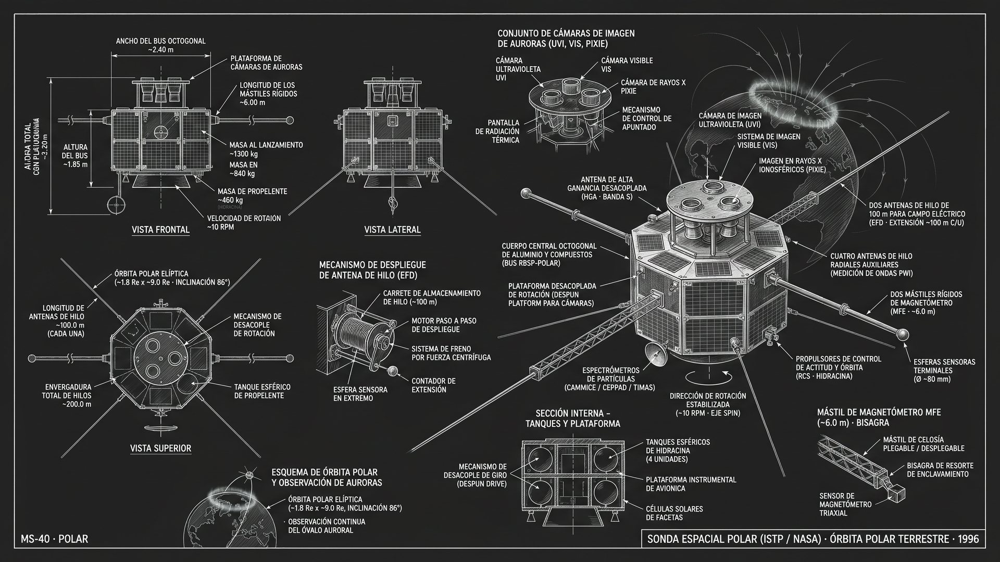

Polar

Fotografió la aurora y la midió al mismo tiempo, con doce instrumentos. Así encontró las ondas que le llevan la energía que la enciende: bajan a 10.000 kilómetros por segundo.
Fin de las operaciones el 28 de abril de 2008, más de doce años después de su lanzamiento frente a los dos años previstos; continúa en su órbita elíptica polar de 9 x 1,8 radios terrestres, con 86 grados de inclinación. Personas: John Wygant, L. A. Frank, J. B. Sigwarth
Lo que hizo
- Doce ojos — Volé con doce instrumentos, tres de ellos cámaras de la aurora en distintas longitudes de onda: la primera vez que se veía y se medía el mismo fenómeno a la vez.
- La reconexión, vista — En 2000 publiqué la primera documentación experimental de la reconexión magnética sin colisiones: 3,5 horas de datos completos, unos 2 millones de datos, confirmaron 12 predicciones teóricas.
- El motor de la aurora — En 2000 identifiqué las ondas de Alfvén que transportan la energía de la aurora: viajan a 10.000 km/s a unos 30.000-40.000 km de altitud, con energía suficiente para encenderla.
Modelo 3D, chat y cómic, en tres idiomas
Fuentes
- pwg.gsfc.nasa.gov/istp/polar/overview.html
- pwg.gsfc.nasa.gov/istp/polar/2000apr.html
- pwg.gsfc.nasa.gov/istp/polar/2001mar.html
Ver el índice completo · Proyecto del NASA Space Apps Challenge 2026. Contenido con fuentes citadas.